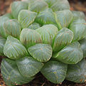

多肉植物是指植物营养器官肥大的高等植物，通常具根、茎、叶三种营养器官和花、果实、种子三种繁殖器官。在园艺上，又称多浆植物或多肉花卉，但以多肉植物这个名称最为常用。全世界共有多肉植物一万余种，它们都属于高等植物(绝大多数都是被子植物)。根据最新统计，多肉植物在植物分类上隶属100余科。
肉肉简介
多肉植物是指植物营养器官的某一部分，如茎或叶或根（少数种类兼有两个或两个以上部分）具有发达的薄壁组织用以贮藏水分，在外形上显得肥厚多汁或带粉的一类植物。它们大部分生长在干旱或一年中有一段时间干旱的地区，每年有很长的时间根部吸收不到水分，仅靠体内贮藏的水分维持生命。有时候人们喜欢把这类植物称为沙漠植物或沙生植物，这是不太确切的。多肉植物确实有许多生长在沙漠地区，但却不是都生长在沙漠，沙漠里也还生长着许多不是多肉植物的植物。
由于长期适应干旱环境的结果，仙人掌类和多肉植物的营养器官发生了非常大的变化，原本的叶片在大多数仙人掌类植物中已退化为针状叶，在大戟科多肉植物中也常仅成痕迹或早落；但在其他大多数科的多肉植物中仍存在，只是已程度不同的肉质化了；茎在仙人掌类中不仅已代替叶成为进行光合作用的主要器官，而且由于变化万千使其具极高的观赏性。但很多其他科的多肉植物茎却不存在或仅具极短的茎。此外，仙人掌类还具有独特的器官刺座。因此，在叙述形态时必须将仙人掌类单独列出，以便于叙述。
具有景天酸代谢途径的植物，多为多肉质植物。在夜间通过开放的孔吸收CO₂，然后借助PEP羧化酶与磷酸烯醇式丙酮酸结合，形成草酰乙酸，然后在苹果酸脱氢酶（NADPH）作用下还原成苹果酸，进入液泡并累计变酸（从pH5～3）；第二天光照后苹果酸从液泡中转运回细胞质和叶绿体中脱羧，释放CO₂被RuBP吸收形成碳水化合物。
-
黑王子红锦
-
碧光环
- 
姬玉露
多肉灯泡
石生花
植物特点
多肉植物是指植物营养器官的某一部分，如茎或叶或根（少数种类兼有两个或两个以上部分）具有发达的薄壁组织用以贮藏水分，在外形上显得肥厚多汁或带粉的一类植物。它们大部分生长在干旱或一年中有一段时间干旱的地区，每年有很长的时间根部吸收不到水分，仅靠体内贮藏的水分维持生命。有时候人们喜欢把这类植物称为沙漠植物或沙生植物，这是不太确切的。多肉植物确实有许多生长在沙漠地区，但却不是都生长在沙漠，沙漠里也还生长着许多不是多肉植物的植物。
由于长期适应干旱环境的结果，仙人掌类和多肉植物的营养器官发生了非常大的变化，原本的叶片在大多数仙人掌类植物中已退化为针状叶，在大戟科多肉植物中也常仅成痕迹或早落；但在其他大多数科的多肉植物中仍存在，只是已程度不同的肉质化了；茎在仙人掌类中不仅已代替叶成为进行光合作用的主要器官，而且由于变化万千使其具极高的观赏性。但很多其他科的多肉植物茎却不存在或仅具极短的茎。此外，仙人掌类还具有独特的器官刺座。因此，在叙述形态时必须将仙人掌类单独列出，以便于叙述。
具有景天酸代谢途径的植物，多为多肉质植物。在夜间通过开放的孔吸收CO₂，然后借助PEP羧化酶与磷酸烯醇式丙酮酸结合，形成草酰乙酸，然后在苹果酸脱氢酶（NADPH）作用下还原成苹果酸，进入液泡并累计变酸（从pH5～3）；第二天光照后苹果酸从液泡中转运回细胞质和叶绿体中脱羧，释放CO₂被RuBP吸收形成碳水化合物。
品种分类
全世界共有多肉植物一万余种，在植物分类上隶属一百多个科。
根据APG Ⅲ分类法，常见栽培的多肉植物包括仙人掌科、番杏科、大戟科、景天科、芦荟科、萝藦科、天门冬科（包括原龙舌兰科）和景天科菊科。而凤梨科、鸭跖草科、夹竹桃科、马齿苋科、回欢草科（2009 的 APG III system将其从马齿苋科中分出来单独列为一科）葡萄科、风信子科、酢浆草科、荨麻科、石蒜科、苦苣苔科、唇形科、胡椒科、粟米草科（曾经属于番杏科）、星粟草科（曾经属于番杏科）、海马齿科（曾经属于番杏科）、紫茉莉科、吊兰科、土人参科（曾经属于马齿苋科）、落葵科、日光兰科、瓣鳞花科、灯心草科、贝母科、罂粟科、百部科、菝葜科、姜科、兰科也有一些种类常见栽培。天南星科、牻牛儿苗科、福桂花科、龙树科、葫芦科、桑科、辣木科和薯蓣科、防己科、茶茱萸科、橄榄科、商陆科、漆树科、豆科、西番莲科、五加科、旋花科、胡麻科、莎草科、藜科、仙茅科、木棉科、报春花科、虎耳草科、石竹科、番木瓜科、秋海棠科、茄科、假叶树科、蒺藜科、千屈菜科、闭鞘姜科、旱金莲科、杜鹃花科、毛茛科、小鸡草科（曾经属于马齿苋科）、玄参科、葱科、秋水仙科、星捧月科、蒟蒻薯科、紫葳科、芭蕉科、紫金牛科、叶下珠科（即叶萝藦科，原属大戟科）、的多肉植物也有引进，还很稀有。伞形科、白花菜科、凤仙花科、矛花科、紫草科、禾本科、楝科、梧桐科、使君子科、十字花科、茜草科、凤仙花科、桑寄生科、刺莲花科、锦葵科、野牡丹科、檀香科、无患子科、马兜铃科、桃金娘科、莲叶桐科、藤黄科、蜜花科、红木科、车前科、草海桐科、浜藜叶科、水麦冬科、小二仙草科、洋二仙草科（古奴科）、瑞香科、血皮草科、玉蕊科、毛石蒜科、蔷薇科、蓝星科、马鞭草科的多肉国内基本没有引进，甚至在国外也很少见。狸藻科的某些品种虽然肉质，但是多数情况下归为食虫植物。甚至也有专家认为在属于裸子植物的的苏铁科、柏科、银杏科、托叶铁科、泽米铁科、百岁兰科、买麻藤科以及属于蕨类植物的满江红科、槐叶苹科、骨碎补科、木贼科、水韭科、松叶蕨科也存在多肉植物，有些品种只是单纯因为玩家的爱好，如刺叶树科、白花丹科、多须草科。也有的多肉植物的叶片有的地方是透明的（即“窗”），如芦荟科。百合科曾经也属于常见的多肉植物，但APG Ⅲ分类系统取消了百合科，将瓦苇属、鲨鱼掌属、芦荟属等叶多肉植物归为芦荟科，鳞茎品种归为风信子科，并将其余品种归为总共8个科中，原百合科已不存在；原本的龙舌兰科并入天门冬科，取消龙舌兰科。中国原产的多肉植物主要有景天科景天属、瓦松属、瓦莲属（分布于新疆地区）以及藜科的大部品种，番杏科（番杏）、粟米草科（粟米草等）、星粟草科（星粟草，假海马齿等）、海马齿科（海马齿）、萝藦科（丽江吊灯花、白首乌、润肺草，肉珊瑚等）、马齿苋科（马齿苋，毛马齿苋等）、鸭跖草科（鸭跖草等）、葡萄科、石蒜科、风信子科、苦苣苔科、胡椒科、葫芦科、薯蓣科、防己科（分布于西南）、石竹科、报春花科、商陆科、五加科（分布于东北）、旋花科、莎草科、瓣鳞花科、茄科的小部分品种。还有许多植物虽具有肉质部分，但是否属于多肉植物还有争议。
在多肉植物中，仙人掌科植物不但种类多，而且具有其他科多肉植物所没有的器官刺座；同时仙人掌科植物形态的多样性、花的魅力部是其他科的多肉植物难以企及的。因而园艺上常常将它们单列出来称为仙人掌类，而将其他科的多肉植物称为多肉植物。因此多肉植物这个名词有广义和狭义之分，广义的包括仙人掌类以及所有具有肉质部分的植物，狭义的不包括仙人掌类和其他植物。我们可以将仙人掌类植物称为多肉植物，甚至可以将仙人掌科以外的各科多肉植物称为仙人掌类。
常见科属
景天科
【景天科植物普遍喜强烈的阳光和排水良好的砂质土壤。颜色艳丽，造型可爱， 是中国市场上最为常见的多肉植物之一。】
拟石莲花属（Echeveria）：玉蝶、月影、蓝石莲、黑王子、丽娜莲、特玉莲等
景天属（Sedum）：虹之玉、乙女心、八千代、薄雪万年草等。
风车草属（Graptopetalum）：胧月、姬秋丽、桃之卵等。
青锁龙属（Crassula）：玉树、纪之川、毛海星、若绿等。
厚叶草属（Pachyphytum）：星美人、桃美人、千代田之松等。
伽蓝菜属（Kalankoe）：宽叶不死鸟、玉吊钟、长寿花、月兔耳、千兔耳等。
银波锦属（Cotyledon）：熊童子、福娘、银波锦、达摩福娘等。
瓦松属（Orostachys）：子持莲华、瓦松等。
莲花掌属（Aeonium）：玉龙观音、黑法师、山地玫瑰等。
天锦章属（Adromischus）：库珀天锦章、神想曲、朱唇石、玛丽安等。
奇峰锦属（Tylecodon）：阿房（ē páng）宫、钟鬼、万物想等。
石莲属（Sinocrassula）：滇石莲、因地卡、立田凤、绿花石莲等。
仙女杯属（Duleya）：白菊、雪山、宽叶仙女杯、法瑞诺莎、拇指仙女杯。
菊科
千里光属（Senecio）：翡翠珠/佛珠、情人泪、七宝树、锦上珠、普西利菊
厚敦菊属（Othonna）：黄花新月（紫玄月）、蛮鬼塔
番杏科
番杏科是双子叶植物纲，石竹目的一个科，约有126属，1100种。番杏科植物主要分布在非洲南部，在澳大利亚和中太平洋地区也有少量分布。番杏科常见的科属有生石花属、肉锥花属、枝干番杏属等。
生石花
番杏科生石花属植物的总称，非常肉质的草本，尚有很多栽培变种。栽培较为困难，需保持强光照射，冬夏休眠，冬季可完全断水。每年春季蜕皮（即新叶从生长点长出，老叶枯萎）一次，此时须保持一定光照但也不能太强，并且暂时停止浇水，待老叶枯萎时方可稍许给水。花大，有多种颜色，异株授粉，种荚呈元宝状，种子100-200。
枝干番杏
番杏科枝干番杏属植物的总称，常与碧光环Monilaria obconica混淆。茎细长，叶呈圆筒形，光照强时呈现艳丽颜色。夏季生长减弱，但无明显休眠，冬季为生长旺盛期。冬季开花，花大，有多种颜色，有些品种可同株授粉。种荚呈元宝形，种子常较大，依品种不同，每个种荚约15-200粒种子。